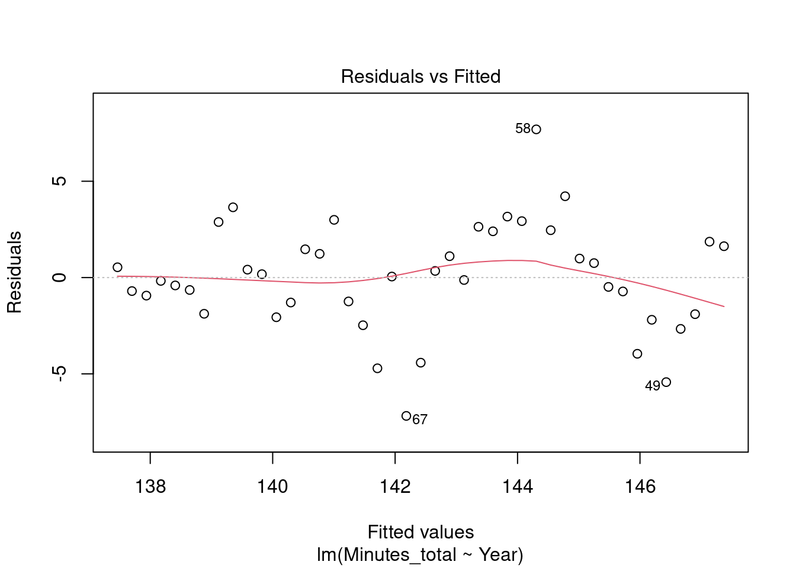
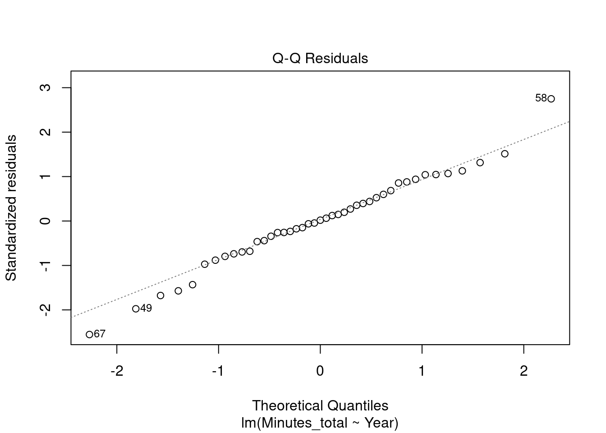
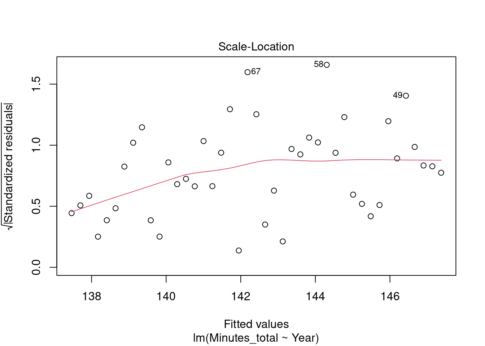
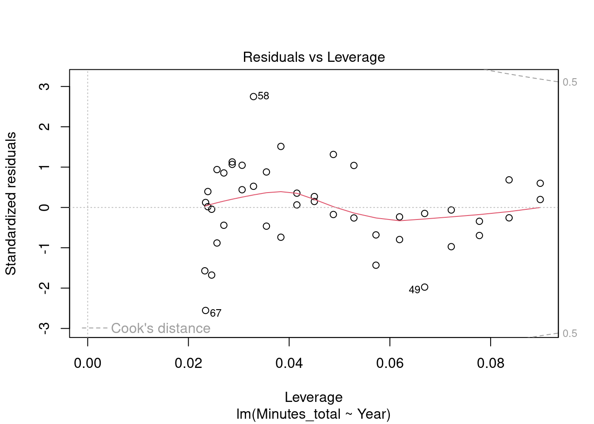

install.packages("tidyverse")The big picture
Now that we have completed our set up, let’s dive right into programming with R. In this chapter, we will go through a “mini-project”, which follows a typical workflow when working with data in R. We will install and load packages, load data, perform some operations on this data, calculate some summary statistics and plot them. In later chapters, we will go into a little bit more depth for each topic. If you want to have more in depth information instead of following the whole workflow first, you can also jump to the according chapter and read the theory. But make sure to come back to this chapter for the final exercise.
Packages
Packages are extensions to the base R you get by default. We already installed our first packages in About this workshop. Let’s keep doing that and install the following package as well:
Just by installing the packages, we can’t use them. We also have to load them into our R session:
library(tutoR)
library(tidyverse)The top of your R Script should look something like this:
install.packages("devtools")
devtools::install_github("nickhaf/tutoR")
install.packages("tidyverse")
library(tutoR)
library(tidyverse)Load Data
Data is loaded into R so you can work with it. Let’s do just that. First, you need to download the file “london_marathon.csv” from this link and save it in your project folder (Tip: Save it in a new subfolder named “raw_data” or somewhat similar.). The data comes from the LondonMarathon package. Then, you can load it into R:
load(file = "./raw_data/london_marathon.rda")This will load the data into R. You can see it popping up in your Environment pane on the upper right. Note we used the load() function to load a data set with the ending .rda. Here you can find a more thourough discussion about loading data. It is important you use the correct path, because otherwise R will not find your data file. Here the RStudio project we have created earlier comes in handy. It automatically knows our file lies within our project folder, which is why we can use a relative path, that starts at the project path and looks into the folder raw_data to open the file. Otherwise, we would have to use an absolute path (like “C:/Users/hafiznij/Documents/GitHub/r_tutorial/raw_data/london_marathon.rda” which will only work on my notebook, and only if my project stays in on this path.
Take a look
Now that we have our data loaded safely into R, we can get an overview with a multitude of commands. One of the most important ones might be View(), which will open the data set excel-style in a new window:
View(london_marathon)Especially for bigger data sets, it might be more feasable to only look at the structure and not the whole data set:
str(london_marathon)Classes 'tbl_df', 'tbl' and 'data.frame': 42 obs. of 8 variables:
$ Date : Date, format: "1981-03-29" "1982-05-09" ...
$ Year : num 1981 1982 1983 1984 1985 ...
$ Applicants : num 20000 90000 60000 70000 83000 80000 80000 73000 72000 73000 ...
$ Accepted : num 7747 18059 19735 21142 22274 ...
$ Starters : num 7055 16350 16500 16992 17500 ...
$ Finishers : num 6255 15116 15793 15675 15873 ...
$ Raised : num NA NA NA NA NA NA NA NA NA NA ...
$ Official charity: chr NA NA NA NA ...On the left we can see the columns of this data.frame, named Date, Year, Applicants etc … Further on the right we see the first values in each column, for example 1981, 1982 etc …
Data wrangling
Now, lets do something fun with this data. We want to answer the question if people have gotten faster at running marathons over that last 40 years. We will use a Some sort of regression using the times or f
Merging data
load(file = "./raw_data/winners.rda")Clean up data
Remove NAs, select relevant columns, Build another Time column
winners$Minutes_total <- winners$Hours * 60 + winners$MinutesSubsetting data
Divide by Category (Wheelchar vs. no wheelchair)
Regression Time vs. year
women <- winners[winners$Category == "Women", ]
lm_rs <- lm(Minutes_total ~ Year, women)
summary(lm_rs)
Call:
lm(formula = Minutes_total ~ Year, data = women)
Residuals:
Min 1Q Median 3Q Max
-7.1827 -1.5880 0.0532 1.7458 7.6944
Coefficients:
Estimate Std. Error t value Pr(>|t|)
(Intercept) 614.65116 70.01127 8.779 5.79e-11 ***
Year -0.23588 0.03497 -6.745 3.78e-08 ***
---
Signif. codes: 0 '***' 0.001 '**' 0.01 '*' 0.05 '.' 0.1 ' ' 1
Residual standard error: 2.846 on 41 degrees of freedom
Multiple R-squared: 0.526, Adjusted R-squared: 0.5144
F-statistic: 45.5 on 1 and 41 DF, p-value: 3.777e-08# 614 min bei Year = 0, für jedes Jahr -0.23 Min weniger:
# 614 + 2020 * -0.236
plot(lm_rs)



Plot the data
# library(ggplot2)
# winners %>%
# filter(Category %in% c("Men", "Women")) %>%
# ggplot(data = ., aes(x = Year,
# y = Minutes_total,
# colour = Nationality,
# shape = Category)) +
# geom_point()
#
#
# winners %>%
# filter(Category %in% c("Wheelchair Men", "Wheelchair Women")) %>%
# ggplot(data = ., aes(x = Year,
# y = Minutes_total,
# colour = Nationality,
# shape = Category)) +
# geom_point()# Für die Übung.
#install.packages("tidytuesdayR")
library(tidytuesdayR)
tuesdata <- tidytuesdayR::tt_load('2022-08-16')--- Compiling #TidyTuesday Information for 2022-08-16 ------- There are 3 files available ------ Starting Download ---
Downloading file 1 of 3: `characters.csv`
Downloading file 2 of 3: `myers_briggs.csv`
Downloading file 3 of 3: `psych_stats.csv`--- Download complete ---